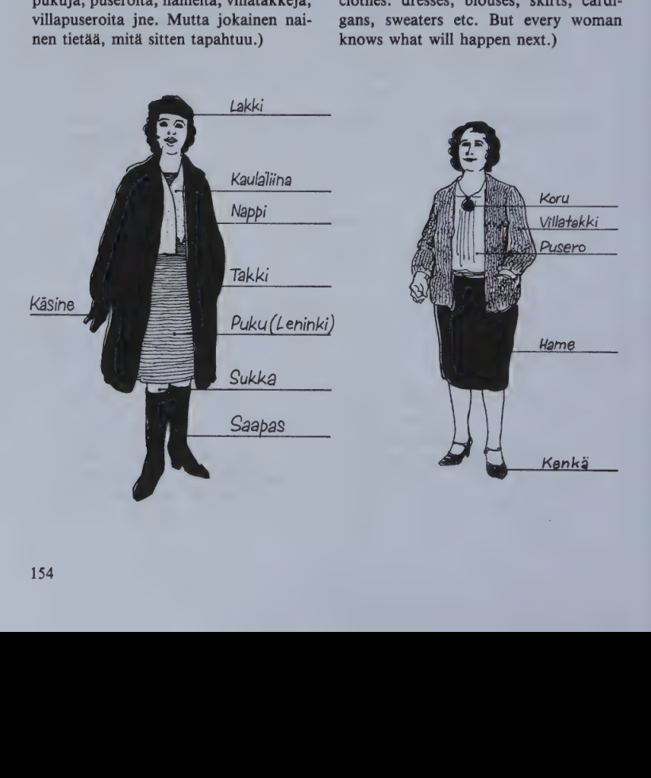
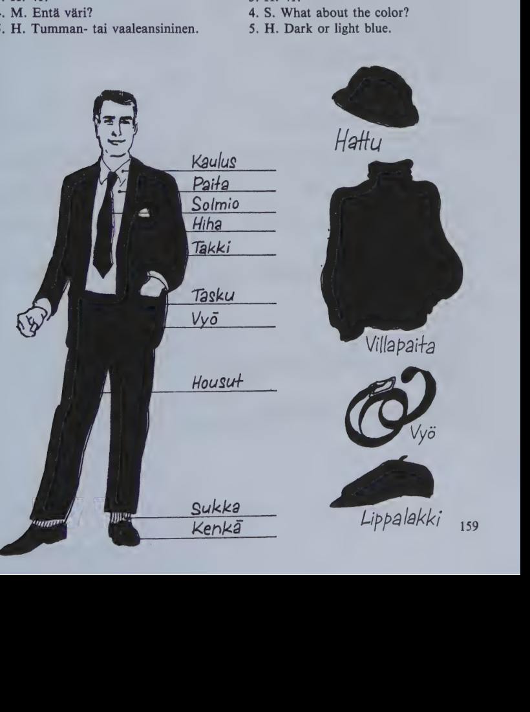

Kappale 32 / Lesson 32#
Vaatteita ostamassa (I) / Shopping for clothes (I)#
Helsinkilainen tavaratalo, naisten vaateosasto. Linda Hill tulee. Han on hauskannakoinen, aika lyhyt, vaalea nainen. Hanella on ruskea puku paalla.
Suomi |
English |
|---|---|
1. Myyja. Voinko mina auttaa? |
1. Salesgirl. May I help you, madam? |
2. L. Kiitos, mina katselen vain. |
2. L. Thank you, I’m just looking. |
(Han todellakin aikoo vain katsella. Han katselee kauan aikaa erilaisia vaatteita: pukuja, puseroita, hameita, villatakkeja, villapuseroita jne. Mutta jokainen nainen tietaa, mita sitten tapahtuu.)

Suomi |
English |
|---|---|
3. L. Saisinko mina koettaa tata punaista hametta? Ja tuota valkoista puseroa? |
3. L. Could I try on this red skirt? And that white blouse? |
4. M. Tanne pain, olkaa hyva, taalla on vapaa sovitushuone. |
4. S. This way, please, here’s a free fitting-room. |
5. L. Hame on kiva. Mutta onkohan vari liian kirkas? Mina olen niin lihava. |
5. L. The skirt is nice. But I wonder if the color is too bright? I’m so fat. |
6. M. Lihavako? Ei ollenkaan! Normaali nainen ei ole laiha kuin mannekiini. Minusta kirkkaan punainen sopii teille erittain hyvin. |
6. S. Fat? Not a bit! A normal woman is not thin like a fashion model. I think bright red suits you very well. |
7. L. Mina tykkaan tasta puserostakin. Mutta se on liian suuri. |
7. L. I like this blouse, too. But it’s too large. |
8. M. Tassa on pienempi numero, koettakaapas tata. |
8. S. Here’s a smaller size, try this one on. |
9. L. Minka hintainen tama on? |
9. L. What price is this? |
10. M. … markkaa. |
10. S. … marks. |
11. L. Onko se niin kallis? Eiko teilla ole halvempia? |
11. L. Is it so expensive? Don’t you have cheaper ones? |
12. M. Ei samaa mallia. Mutta tuossa on tuollainen malli, vain … markkaa. |
12. S. Not in the same style. But there’s that kind of style, at only … marks. |
13. L. Mutta se ei ole yhta kaunis kuin tama. Niin se on: kauniimpi on usein myos kalliimpi. Mitas mina nyt tekisin? Mina luulen, etta mina otan vain taman hameen. |
13. L. But it isn’t as pretty as this one. That’s how it is: what’s prettier is often also more expensive. What should I do now? I’ll just take this skirt, I guess. |
sama same eri different, not same
saman/lainen (kuin) eri/lainen (kuin)
same kind of, similar to different (kind of), different from, not similar
Kielioppia / Structural notes#
1. Comparative of adjectives#
Finnish |
English |
|---|---|
Vuori on korkea/mpi kuin maki. |
A mountain is higher than a hill. |
Tama talo on paljon iso/mpi kuin tuo. |
This house is much bigger than that one. |
Raketti on viela nopea/mpi kuin suihkukone. |
A rocket is faster still than a jet plane. |
The comparative of adjectives is formed by adding the suffix -mpi to the stem. When the basic form and the gen. stem are different, the gen. stem is used.
More examples:
Basic form |
Comparative |
English |
|---|---|---|
nuori (nuore/n) |
nuore/mpi |
younger |
uusi (uude/n) |
uude/mpi |
newer |
kaunis (kaunii/n) |
kaunii/mpi |
prettier, more beautiful |
valkoinen (valkoise/n) |
valkoise/mpi |
whiter |
lammin (lampima/n) |
lampima/mpi |
warmer |
rakas (rakkaa/n) |
rakkaa/mpi |
dearer |
The final short -a (-a) in two-syllable adjectives changes into -e-:
Basic form |
Comparative |
English |
|---|---|---|
vanha |
vanhe/mpi |
older, elder |
halpa (halva/n) |
halve/mpi |
cheaper |
kylma |
kylme/mpi |
colder |
Note the following irregular comparatives:
Finnish |
English |
Comparative |
English |
|---|---|---|---|
hyva |
good |
pare/mpi |
better |
pitka |
long, tall |
pite/mpi |
longer, taller |
(Note here also the adverbs paljon -> enemman more, vahan -> vahemman less.)
The word used to tie together the two things compared with each other (Engl. “than”, “as”) is kuin:
Finnish |
English |
|---|---|
Matti on vanhempi kuin Pekka. |
Matti is older than Pekka. |
Matti on yhta vanha kuin Paavo. |
Matti is as old as Paavo. |
(Matti ja Paavo ovat yhta vanhat.) |
Matti and Paavo are equally old. |
Pekka ei ole niin vanha kuin Matti. |
Pekka is not so old as Matti. |
With comparative, partitive can be used instead of kuin:
Finnish |
English |
|---|---|
Matti on Pekka/a vanhempi. |
Matti is older than Pekka. |
Tavallista parempi. |
Better than usual. |
Normaalia pienempi. |
Smaller than normal. |
The comparative is inflected like a normal adjective. Its principal parts are always of the type:
parempi - parempaa - paremman - parempia
("into" form parempaan). Examples:
Finnish |
English |
|---|---|
Hiihto on hauskempaa kuin kavely. |
Skiing is more fun than walking. |
Tarvitsemme suuremman asunnon. |
We need a larger apartment. |
Perhe muuttaa uudempaan taloon. |
The family is moving into a newer house. |
Pidan vaaleammasta sinisesta. |
I like a lighter blue. |
Onko teilla halvempia hameita? |
Have you got cheaper skirts? |
2. Nouns and adjectives ending in -i#
Look up the words ending in -i in the list on p. 99.
a) Review the i-e words and note the following points:#
All these words consist of two syllables. The group includes different word types (
ovi, pieni, uusi) but they all share a similar partitive plural through the sing.:
Finnish |
English |
Part. sing. |
Gen. sing. |
Part. pl. |
|---|---|---|---|---|
ovi |
door |
ovea |
oven |
ovia |
+lehti |
paper |
lehtea |
lehden |
lehtia |
The
oviwords retain the-e-all through the sing.:The
pieniwords drop the-e-in the part. sing.:
Finnish |
English |
Part. sing. |
Gen. sing. |
Part. pl. |
|---|---|---|---|---|
pieni |
small |
pienta |
pienen |
pieniA |
saari |
island |
saarta |
saaren |
saaria |
tuli |
fire |
tulta |
tulen |
tulia |
lapsi |
child |
lasta |
lapsen |
lapsia |
lumi |
snow |
lunta |
lumen |
lumia |
The
uusiwords form a special group of their own:
Finnish |
English |
Part. sing. |
Gen. sing. |
Part. pl. |
|---|---|---|---|---|
+uusi |
new |
uutta |
uuden |
uusia |
+kasi |
hand |
katta |
kaden |
kasia |
b) About parempi words (comparatives) see par. 1 above.#
c) Review the i-i (bussi, naapuri) words and note the following points:#
These words retain the
-i-all through the sing. The group comprises the majority of the words ending in-i, among them all those longer than two syllables.A large number of the
i-iwords are loanwords from other languages.
Finnish |
English |
Part. sing. |
Gen. sing. |
Part. pl. |
|---|---|---|---|---|
bussi |
bus |
bussia |
bussin |
busseja |
+paketti |
parcel |
pakettia |
paketin |
paketteja |
naapuri |
neighbor |
naapuria |
naapurin |
naapureita |
laakari |
doctor |
laakaria |
laakarin |
laakareita |
Sanasto / Vocabulary#
Finnish |
English |
|---|---|
eri/lai/nen-sta-sen-sia |
different, various |
hame-tta-en-ita |
skirt |
hintai/nen-sta-sen-sia: minka hintainen? |
what price? |
jokai/nen-sta-sen |
every; everybody, everyone |
+kirkas-ta kirkkaan kirkkaita |
bright, clear |
+koetta/a koetan koetti koettanut (jotakin pukua) |
to try, attempt; to try on |
laiha-a-n laihoja |
thin, lean, meager |
lihava-a-n lihavia |
fat, plump, corpulent |
malli-a-n malleja |
model; pattern; style |
mannekiini-a-n mannekiineja |
fashion model |
nakoi/nen-sta-sen-sia (jonkin n.) |
looking like something |
ollenkaan: ei o. |
not at all |
osasto-a-n-ja |
section, department |
+puku-a puvun pukuja |
suit; dress; costume |
pusero-a-n-ita |
blouse |
paalla: olla p. (= ylla) |
to have on, wear |
sovitus/huone-tta-en-ita |
fitting-room |
tavara/talo-a-n-ja |
department store |
tuollai/nen-sta-sen-sia |
that kind of, such |
tallai/nen-sta-sen-sia |
this kind of, such |
vaalea-(-t)a-n vaaleita |
light(-colored); blond, fair |
+vaate-tta vaatteen vaatteita (usu. pl.) |
garment; pl. clothes, clothing |
vaate/usta-uksen |
clothing, apparel |
villa/pusero-a-n-ita |
lady’s sweater |
+villa/takki-a-takin-takkeja |
cardigan |
yhta |
equally; as (…as) |
*
Finnish |
English |
|---|---|
saman/lai/nen-sta-sen-sia |
similar |
taivas-ta taivaan taivaita |
sky; heaven |
Kappale 33 / Lesson 33#
Vaatteita ostamassa (II) / Shopping for clothes (II)#
Miesten vaateosasto. Herra Hill tulee. Han on pitka tumma mies, jolla on harmaa takki ja harmaat housut.

Suomi |
English |
|---|---|
1. H. Haluaisin katsoa paitoja. Sellaisia, joita ei tarvitse silittaa. |
1. H. I’d like to see some shirts. Those which you don’t have to iron. |
2. Myyja. Mika koko? |
2. Salesgirl. What size? |
3. H. 41. |
3. H. 41. |
4. M. Enta vari? |
4. S. What about the color? |
5. H. Tumman- tai vaaleansininen. |
5. H. Dark or light blue. |
6. M. Olkaa hyva ja valitkaa tasta. Paitojen hinnat vaihtelevat … markasta … markkaan. Nama ovat hienoja paitoja, kotimaista puuvillaa. |
6. S. Please choose from here. The prices of the shirts vary from … marks to … marks. These are fine shirts, Finnish cotton. |
7. H. Mina otan taman vaaleansinisen. Saanko sitten nahda sukkia? |
7. H. I’ll take this lightblue one. May I also see some socks? |
8. M. Nailonia vai villaa? |
8. S. Nylon or wool? |
9. H. Villaa. Harmaat. Naiden sukkien vari on juuri sopiva. Saanko kaksi paria? |
9. H. Wool. Grey. The color of these socks is just right. May I have two pairs, please. |
10. M. Mita muuta saa olla? Solmioita? Villapaita? Lampimat kasineet? Hattu? |
10. S. Do you want anything else? Ties? A sweater? Warm gloves? A hat? |
11. H. Kiitos, tama riittaa talla kertaa. Mutta meidan poika tarvitsee uudet farkut, ja haluaisin kysya farkkujen hintoja. |
11. H. Thank you, this is enough this time. But our son needs new jeans, I’d like to inquire about the prices of jeans. |
12. M. Poikien housut ovat kolmannessa kerroksessa. Siella on nyt juuri poikien vaatteiden ale, jossa on samettihousuja, farkkuja ja kenkia. |
12. S. Boys’ trousers are on the third floor. Right now there’s a sale of boys’ clothes, with corduroy trousers, jeans, and shoes. |
13. Linda H. Hei! Mina olen hirvean vasynyt. |
13. Linda H. Hi, Bob! I’m awfully tired. |
14. Bob. Niin minakin. Tule, mennaan kahville! |
14. Bob. So am I. Come on, let’s have some coffee! |
15. L. Mennaan vain. Tassa on vapaa poyta, istutaan siihen. |
15. L. Yes, let’s. Here’s a free table, let’s sit down there. |
16. B. Minulla on kova jano. |
16. B. I’m very thirsty. |
17. L. Niin minullakin. Ihanaa kahvia! Otetaan viela toinen kuppi. |
17. L. So am I. Wonderful coffee! Let’s have another cup. |
18. B. Otetaan vain. |
18. B. Okay, let’s do that. |
Mita ainetta poyta on? Se on puuta.
(Mista aineesta)
Mina pidan sinisesta. - Niin minakin.
Minusta tuo solmio on kaunis. - Niin minustakin.
Kielioppia / Structural notes#
1. Genitive plural#
Sing. |
English |
Pl. |
English |
|---|---|---|---|
poja/n |
the boy’s |
poiki/en |
the boys’ |
aidi/n |
the mother’s |
aiti/en |
the mothers’ |
When the part. pl. ends in -i/a (-i/a), -ej/a (-ej/a), the gen. pl. will end in -i/en.
Sing. |
English |
Pl. |
English |
|---|---|---|---|
tyto/n |
the girl’s |
tyttoj/en |
the girls’ |
When the part. pl. ends in -j/a (-j/a), the gen. pl. will end in -j/en.
Sing. |
English |
Pl. |
English |
|---|---|---|---|
tehtaa/n |
of the factory |
tehtai/den, tehtai/tten |
of the factories |
When the part. pl. ends in -ta (-ta), the gen. pl. will end in -den (or -tten; this parallel ending is less commonly used).
Parallel forms in the part. pl. will result in parallel forms of the gen. pl.:
Finnish |
English |
|---|---|
(omeni/a) omeni/en |
of the apples |
(omenoi/ta) omenoi/den, omenoi/tten |
of the apples |
Why lasten ohjelma?
Finnish |
English |
|---|---|
lapsi |
child |
part. pl. lapsi/a |
|
gen. pl. lapsi/en, las/ten |
children’s |
Words which end in consonant + ta in their part. sing. may have a parallel form for the gen. pl.: part. sing. stem + ten. This kind of gen. pl. is particularly common with the words lapsi (las/ten), mies (mies/ten), and all words ending in -nen, for instance, nainen (nais/ten), toinen (tois/ten), englantilainen (englantilais/ten).
Old-type gen. plurals which do not follow the above rules are, for instance, Yhdys/valtain (= Yhdys/valtojen) and vanhain(koti) old people’s (home).
Note:
(nai/ta kirjoj/a) nai/den (= nai/tten) kirjoj/en
(noi/ta kirjoj/a) noi/den (= noi/tten) kirjoj/en
(nii/ta kirjoj/a) nii/den (= nii/tten) kirjoj/en
(mi/ta kirjoj/a?) mi/n/ka kirjoj/en?
Note also: The final -n will disappear before a poss. suffix: vanhempien koti, but vanhempie/ni, -si, -nsa, -mme, -nne, -nsa koti.
2. “Let us do” - tehdaan!#
Finnish |
English |
|---|---|
Mennaan kotiin! |
Let’s go home! |
If the infinitive ends in one vowel, add -an (-aan).
Finnish |
English |
|---|---|
(lukea) lue/n |
|
Luetaan jotakin! |
Let’s read something! |
If the infinitive ends in two different vowels, add -taan (-taan) to the stem of the 1st pers. present tense.
Finnish |
English |
|---|---|
(ottaa) ota/n |
|
Otetaan loma! |
Let’s take a vacation! |
If the infinitive ends in -aa (-aa), use the 1st pers. present stem but the -a- (-a-) will change to -e-.
Negative form:
Finnish |
English |
|---|---|
Ei menna viela! |
Let’s not go yet! |
Ei lueta! |
Let’s not read! |
Ei oteta sita! |
Let’s not take it! |
Direct object in connection with “let us do”:
Finnish |
English |
|---|---|
Kirjoitamme kortin. |
We’ll write a card. |
Kirjoitetaan kortti! |
Let’s write a card! |
(Cp. 30:1.)
Note. This form is widely used in colloquial Finnish to replace the standard form of the 1st pers. pl.:
Standard |
Colloq. |
|---|---|
Me menemme kotiin. |
Me mennaan kotiin. |
Me emme ota sita. |
Me ei oteta sita. |
(About the use of tehdaan to express the passive see Finnish for Foreigners 2.)
Sanasto / Vocabulary#
Finnish |
English |
|---|---|
+farkut (pl.) farkkuja |
jeans |
+hattu-a hatun hattuja |
hat |
hieno-a-n-ja |
fine, elegant |
housut (pl.) housuja |
trousers, pants, slacks |
kahvio-ta-n-ita (= kahvila) |
cafeteria |
+kenka-a kengAn kenkiA |
shoe |
+koko-a koon kokoja |
size |
koti/mai/nen-sta-sen-sia (# ulko/mainen) |
domestic, made in one’s own country |
kasine-tta-en-ita |
glove |
nailon-ia-in-eja |
nylon |
+paita-a paidan paitoja |
shirt |
puu/villa-a-n |
cotton |
+riitta/a riitan riitti riittanyt |
to be enough, suffice |
+sametti-a sametin sametteja |
velvet, corduroy |
sellai/nen-sta-sen-sia |
such |
+silitta/a silitan silitti silittanyt |
to iron |
solmio-ta-n-ita |
tie |
sopiva-a-n sopivia |
suitable, convenient, all right |
+sukka-a sukan sukkia |
sock; stocking |
+takki-a takin takkeja |
coat, jacket |
tumma-a-n tummia |
dark (-colored) |
+vaihdel/la vaihtelen vaihteli vaihdellut |
to vary, keep changing, alternate |
vali/ta-tsen-tsi-nnut |
to choose, pick, select, elect |
+villa/paita |
men’s sweater |
vasy/nyt-ta vasyneen vasyneita |
tired |
*
Finnish |
English |
|---|---|
aine-tta-en-ita |
matter, substance; material; essay, theme |